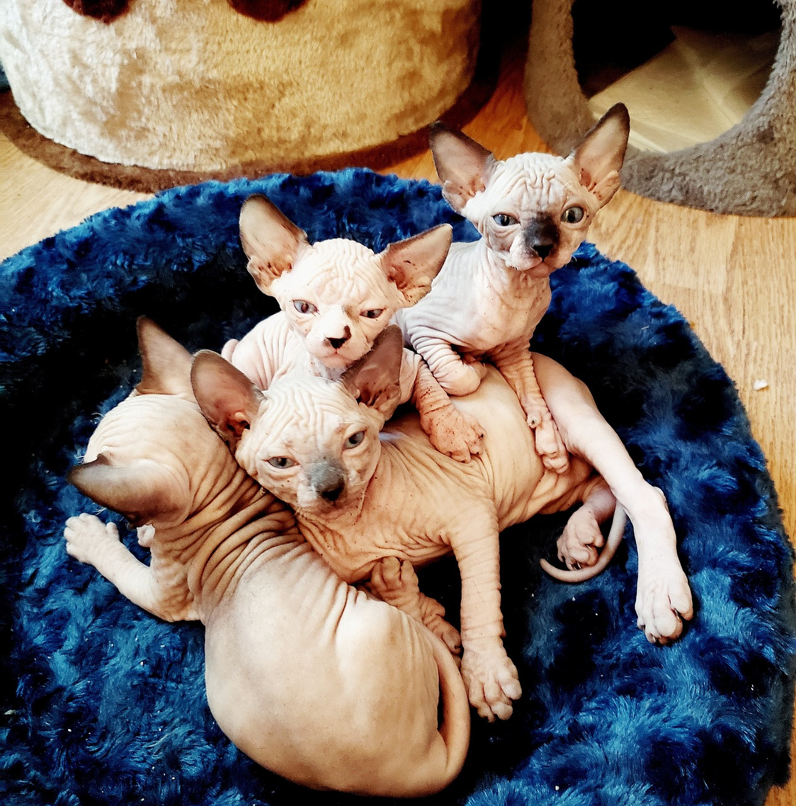
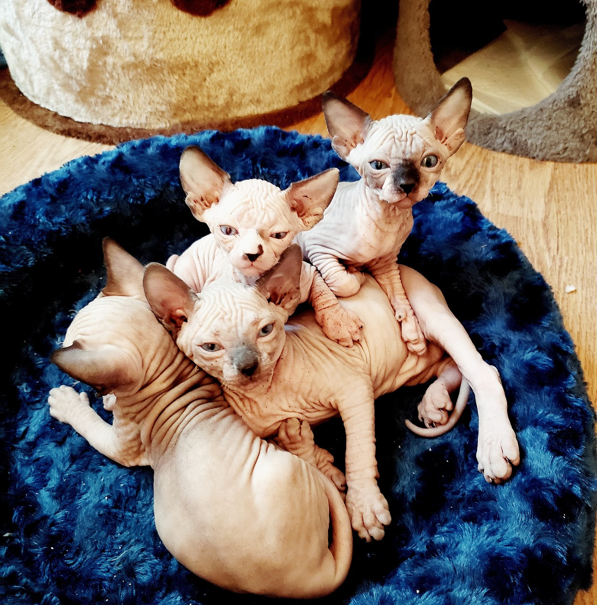

About Sphynx Cats
Sphynx cats, known for their hairlessness, boast a unique look with wrinkled skin and prominent cheekbones. Their lack of a fur coat makes them warm to the touch and they often seek warmth by cuddling with their human companions. Despite their somewhat alien appearance, Sphynx cats are friendly, energetic, and playful, often described as dog-like in their loyalty. They possess a curious and intelligent demeanor, which makes them fond of interactive play. These cats are sociable and love attention, making them excellent pets for families. Their skin requires regular cleaning, as they lack fur to absorb natural oils.

 
